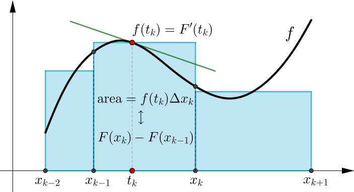
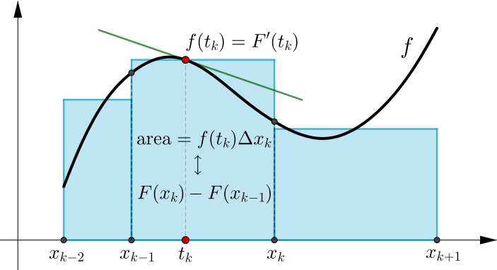

Mathematical Analysis
Leture 15
8.1 First form of the Fundamental Theorem of Calculus (FTC)
Theorem 8.1.1. Let $F \colon [a,b] \to \R$ be a continuous function, differentiable on $(a,b)$. Let $f \in \mathcal R[a,b]$ be such that $f(x) = F'(x)$ for $x \in (a,b)$. Then \begin{equation*} \int_a^b f = F(b)-F(a) . \end{equation*}
Proof of the FTC (first form)
Let $P$ a partition of $[a,b].$ We apply the mean value theorem to $F$ on each subinterval $[x_{k-1},x_k]$ of $P$. This yields a point $t_k\in (x_{k-1},x_k)$ where
$ F(x_k) - F(x_{k-1})$ $ = F'(t_k) (x_k - x_{k-1}) \qquad\qquad$
$ \qquad =f(t_k) (x_k - x_{k-1}) $
Proof of the FTC (first form)
 

Proof of the FTC (first form)
Let $P$ a partition of $[a,b].$ We apply the mean value theorem to $F$ on each subinterval $[x_{k-1},x_k]$ of $P$. This yields a point $t_k\in (x_{k-1},x_k)$ where
$ F(x_k) - F(x_{k-1})$ $ = F'(t_k) (x_k - x_{k-1}) \qquad\qquad$
$ \qquad =f(t_k) (x_k - x_{k-1}) $
Now, consider upper and lower sums $U(P, f)$ and $L(P,f)$. Since $m_k\leq f(t_k)\leq M_k,$ we have
$ L(P,f)$ $ \leq \ds \sum_{k=1}^n \left[ F(x_k) - F(x_{k-1})\right]$ $ \leq U(P,f).$
Proof of the FTC (first form)
$ L(P,f)$ $ \leq \ds \sum_{k=1}^n \left[ F(x_k) - F(x_{k-1})\right]$ $ \leq U(P,f).$
Note that the sum in the middle is a telescoping sum so that
$\ds \sum_{k=1}^n \left[ F(x_k) - F(x_{k-1})\right]$ $=F(b)-F(a),$
which is independent of the partition $P.$ Thus we have
$L(P,f)$ $\leq F(b)-F(a)$ $\leq U(P,f).$
Proof of the FTC (first form)
$L(P,f)$ $\leq F(b)-F(a)$ $\leq U(P,f).$
Since $f\in \mathcal R[a,b],$ \[ L(P,f) = U(P,f) = \int_a^bf. \] Therefore \[ \int_a^bf = F(b)-F(a).\; \bs \]
Example 8.1.1.
Compute $\ds \int_0^1x^2~dx.$
Note that $x^2$ is the derivative of $\ds\frac{x^3}{3}.$ The FTC says that
$\ds \int_0^1x^2~dx$ $\ds= \frac{1^3}{3}-\frac{0^3}{3}$ $\ds=\frac{1}{3}.$
8.2 Second form of the FTC
Theorem 8.2.1. Let $f \colon [a,b] \to \R$ be a Riemann integrable function. Define \begin{equation*} F(x) := \int_a^x f . \end{equation*}
- $F$ is continuous on $[a,b]$.
- If $f$ is continuous at $c \in [a,b]$, then $F$ is differentiable at $c$ and $F'(c) = f(c)$.
8.2 Second form of the FTC
In the following simulation (next slide), the top graph shows the function $f(t)$ and the value of the definite integral for each upper limit $x$, with lower limit $a$. The definite integral is represented with the shaded region between the graph of the function and the $x$-axis.
The graph below shows the accumulation function $$A(x)=\int_a^xf(t)dt$$ for each upper limit $x$, with lower limit $a$.
8.2 Second form of the FTC
Proof of the FTC (second form)
Take $x,y\in[a,b]$ and observe that
$\abs{F(x)-F(y)}$ $\ds = \abs{\int_a^xf - \int_a^y f\,}$ $\ds = \abs{\int_y^x f\,}$
$\;\;\qquad \leq \ds \int_y^x \abs{f}\,$ $\ds\leq M \abs{x-y},$
where $M\gt0$ (since $f$ is continuous/bounded).
This means that $F$ is Lipschitz continuous
$\Ra$ $F$ is uniformly continuous on $[a,b]$
$\Ra$ $F$ is continuous on $[a,b].$
This proves item 1. 😃
Proof of the FTC (second form)
Now to prove item 2, we assume that $f$ is continuous at $c\in[a,b],$ we would like to show that $F'(c)= f(c).$ To do this we rewrite the limit of $F'(c)$ as follows
$\ds \lim_{x\to c}\frac{F(x)-F(c)}{x-c}$ $\ds = \lim_{x\to c}\frac{1}{x-c}\left(\int_a^x f(t)~dt -\int_a^c f(t)~dt \right)$
$\;\,\quad \ds= \lim_{x\to c}\frac{1}{x-c}\left(\int_c^x f(t)~dt \right)$
If we can show the last limit equals $f(c)$, we are done! 😃
Proof of the FTC (second form)
$\ds \lim_{x\to c}\frac{F(x)-F(c)}{x-c}$ $\ds= \lim_{x\to c}\frac{1}{x-c}\left(\int_c^x f(t)~dt \right)=\,{\large ?}$
Given $\epsilon\gt 0 $ we must prodive a $\delta\gt 0$ such that if $\abs{x-c}\lt \delta,$ then
$\ds \abs{\frac{1}{x-c} \left(\int_c^x f(t)~dt \right) - f(c)}\lt \epsilon.$
The assumption of continuity of $f$ gives us control over the difference $\abs{f(t)-f(c)}.$ In particular, we know that there exists a $\delta\gt 0$ such that
$\abs{t-c}\lt \delta $ implies $\abs{f(t)-f(c)}\lt \epsilon.$
Proof of the FTC (second form)
$\abs{t-c}\lt \delta $ implies $\abs{f(t)-f(c)}\lt \epsilon.$
To use this fact, we rewrite the constant $f(c)$ as
$\ds f(c) = $ $\ds \frac{1}{x-c}(x-c)f(c)$ $\ds = \frac{1}{x-c}\int_c^x f(c) ~dt.$
Keeping in mind that $\abs{x-c}\geq \abs{t-c}$, we have that for all $\abs{x-c}\lt \delta$,
$\ds \abs{\frac{1}{x-c} \left(\int_c^x f(t)~dt \right) - f(c)} $ $\ds = \abs{\frac{1}{x-c}\int_c^x \big[f(t)-f(c)\big] }$
Proof of the FTC (second form)
Keeping in mind that $\abs{x-c}\geq \abs{t-c}$, we have that for all $\abs{x-c}\lt \delta$,
$\ds \abs{\frac{1}{x-c} \left(\int_c^x f(t)~dt \right) - f(c)} $ $\ds = \abs{\frac{1}{x-c}\int_c^x \big[f(t)-f(c)\big] }$
$ \ds \leq \frac{1}{\abs{x-c}}\int_c^x \abs{f(t)-f(c)} $
$\ds \lt \frac{1}{\abs{x-c}} \int_c^x \epsilon~dt $ $\,\ds= \,\epsilon .\quad$
Proof of the FTC (second form)
👉 $\;\ds \abs{\frac{1}{x-c} \left(\int_c^x f(t)~dt \right) - f(c)} $ $\lt \ds \epsilon .$
Therefore
$F'(c)=\ds\lim_{x\to c}\frac{F(x)-F(c)}{x-c} \qquad \qquad \quad $
$\ds =\lim_{x\to c}\frac{1}{x-c}\left(\int_c^x f(t)~dt \right)$
$\ds= f(c).\,\bs \qquad \qquad \qquad $
8.2 Second form of the FTC
Theorem 8.2.2. (Change of variables) Let $g \colon [a,b] \to \R$ be a continuously differentiable function, let $f \colon [c,d] \to \R$ be continuous, and suppose $g\bigl([a,b]\bigr) \subset [c,d]$. Then \begin{equation*} \int_a^b f\bigl(g(x)\bigr)\, g'(x)~ dx = \int_{g(a)}^{g(b)} f(s)~ ds . \end{equation*}
Proof of Theorem 8.2.2 (Change of variables)
Since $g$, $g'$, and $f$ are continuous, $f\bigl(g(x)\bigr)\,g'(x)$ is a continuous function of $[a,b]$, therefore it is Riemann integrable. Similarly, $f$ is integrable on every subinterval of $[c,d]$.
Define $F \colon [c,d] \to \R$ by
$
\ds F(y) \coloneqq \int_{g(a)}^{y} f(s)\,ds .
$
$\Ra \, F$ is a differentiable function and $F'(y) = f(y)$
(by the FTC).
Proof of Theorem 8.2.2 (Change of variables)
Define $F \colon [c,d] \to \R$ by
$
\ds F(y) \coloneqq \int_{g(a)}^{y} f(s)\,ds .
$
$\Ra \, F$ is a differentiable function and $F'(y) = f(y)$
(by the FCT).
Applying the chain rule we have
$\ds \bigl( F \circ g \bigr)' (x) $ $\ds = F'\bigl(g(x)\bigr) g'(x)$ $\ds = f\bigl(g(x)\bigr) g'(x) .$
Also observe that $F\bigl(g(a)\bigr) = 0$.
Proof of Theorem 8.2.2 (Change of variables)
$\ds \bigl( F \circ g \bigr)' (x) $ $\ds = F'\bigl(g(x)\bigr) g'(x)$ $\ds = f\bigl(g(x)\bigr) g'(x) .$
Also observe that $F\bigl(g(a)\bigr) = 0$.
$\ds \Ra \int_{g(a)}^{g(b)} f(s)~ds $ $\ds = F\bigl(g(b)\bigr) $ $\ds = F\bigl(g(b)\bigr)-F\bigl(g(a)\bigr)\;\;$
$\ds = \int_a^b \bigl( F \circ g \bigr)' (x) \,dx$ $\ds = \int_a^b f\bigl(g(x)\bigr) g'(x) \,dx . \;\bs $
Example 8.2.1.
We know that the derivative of $\sin(x)$ is $\cos(x)$.
Using $g(x) \coloneqq x^2$, we solve
$\ds \int_0^{\sqrt{\pi}} x \cos(x^2) \, dx$ $\ds = \int_0^\pi \frac{\cos(s)}{2} \, ds \qquad \qquad \qquad $
$\; \quad \ds = \frac{1}{2} \int_0^\pi \cos(s) \, ds$
$ \quad \quad\;\;\; \ds = \frac{ \sin(\pi) - \sin(0) }{2} $ $\ds = 0 .$
Example 8.2.2.
Consider $ \ds \int_{-1}^{1} \frac{\ln \abs{x}}{x} \,dx . $ ⚠️ Careful! ⚠️
If we consider $g(x) \coloneqq \ln \abs{x},$ then $g'(x) = \dfrac{1}{x}.$ So
$\ds\ds \int_{-1}^{1} \frac{\ln \abs{x}}{x} \,dx$
$\ds = \int_{-1}^{1} \underbrace{\ln\abs{x}}_{\large g(x)}\overbrace{\frac{dx}{x}}^{\large g'(x)dx}$
$\ds = \int_{g(-1)}^{g(1)} s \,ds$
$\ds =
\int_{0}^{0} s \,ds $
$\ds =
0 .\quad $
What's going on? 🤔